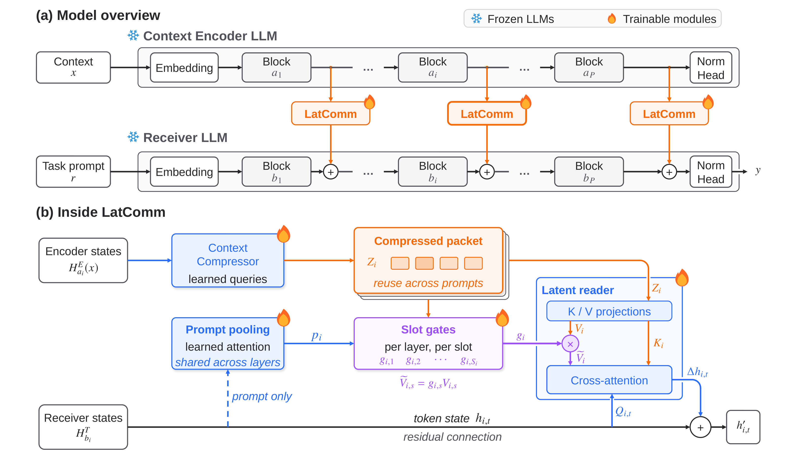
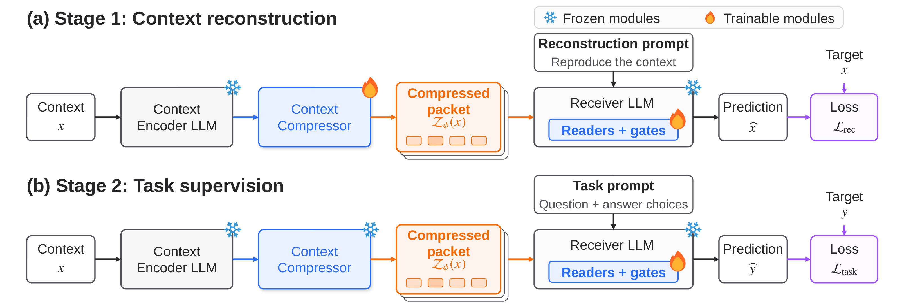
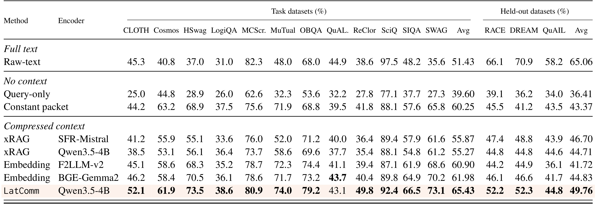
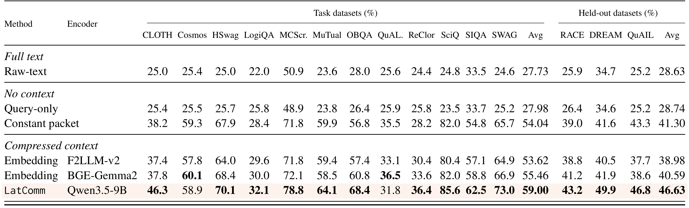
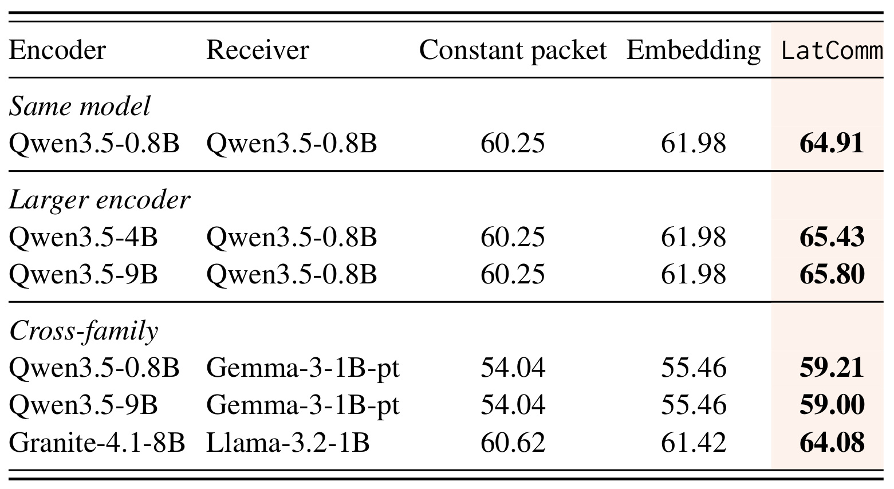
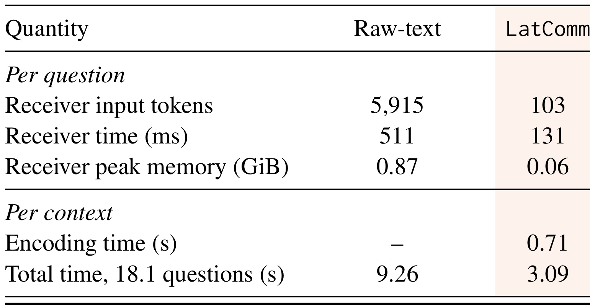
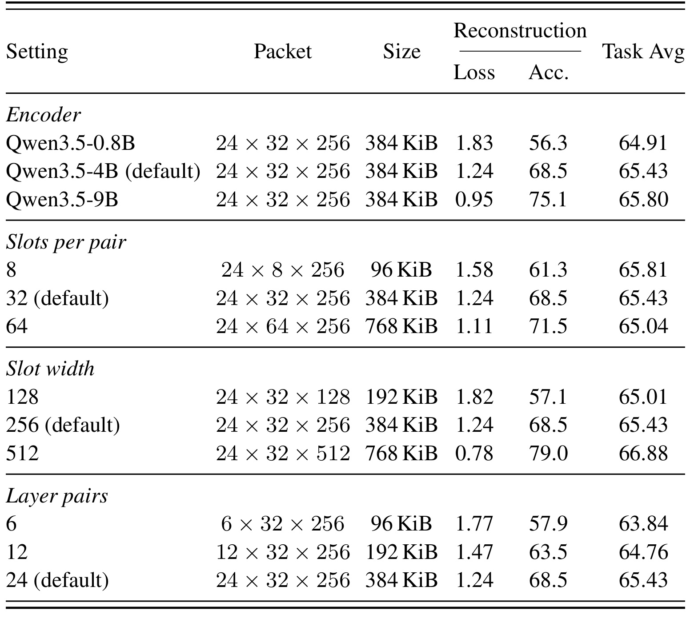
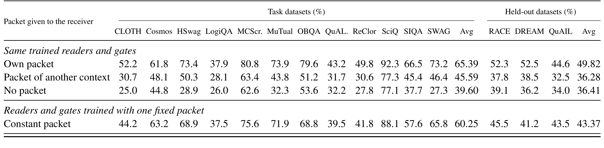
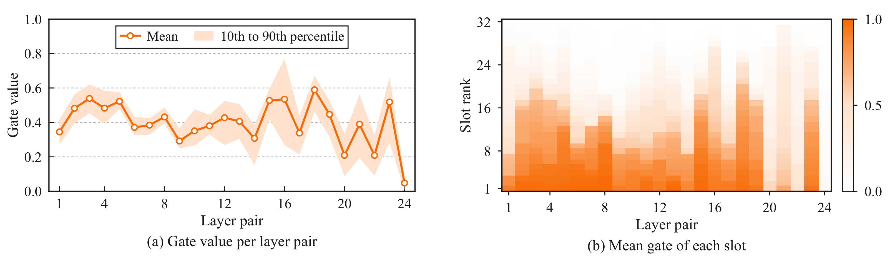

LatComm：将上下文压缩成可跨模型重复读取的潜在通信包
LatComm 研究多个大模型反复使用同一篇上下文时，如何减少传递和重读成本。论文一作 Huawei Lin 来自罗切斯特理工学院，合作机构包括 NVIDIA，发表于 2026 年 10 月 19 日的 arXiv v1。本文依据论文入口的完整正文和附录整理，访问与精读日期为 2026 年 10 月 21 日。已核验 LatComm 官方代码仓库可访问且包含实现、配置、训练评估脚本与测试；本文未复跑训练，性能数字均为论文报告值。
当同一上下文服务多个问题时，以文本在模型之间传递会让接收模型为每个问题重复处理全部上下文。要消除这种重复，表示必须同时与问题无关、保持固定大小，并能被不同的大模型读取；但固定大小且预先生成的表示无法只保留某一道题需要的信息，相关性选择必须留到读取阶段完成。
1. 背景和问题
1.1 重复发生的到底是哪一部分计算
论文讨论的不是压缩回答文本，也不是让两个模型共享一个聊天窗口，而是一个更具体的上下文复用问题：编码端已经看过文档，接收端还要根据同一文档回答许多不同的问题。若编码端把文档原文发给接收端，接收端每次都要对长文做前向计算。问题提示和答案通常很短，真正反复消耗计算的主体是几乎不变的文档。作者用 QuALITY 举例：一篇文章平均对应十八点一个问题，接收端每题输入五千九百一十五个词元，其中约百分之九十八来自文章。这种结构意味着，单独优化回答生成未必能触及主要成本，应该先把可以重复使用的上下文处理结果从每次问答中提取出来。
这里有两个容易混淆的层次。第一层是同一个模型对相同文本的前缀缓存，可以省去一部分重复预填充；第二层是不同模型之间传递已经编码的信息，此时编码器和接收器可能具有不同层数、隐藏维度和分词器。LatComm 同时要求压缩结果能跨问题复用、存储成本不随原文长度增长，并且允许两端模型来自不同家族。假如只满足第一条，保留整段逐词元状态就行；假如只满足第二条，可以针对当前问题抽取少数证据；假如只满足第三条，可以为同一输入逐位置转换缓存。三项条件同时成立，才产生本文真正的接口设计难题。
1.2 文本、缓存与单向量的不同取舍
文本传递的优势是通用，几乎任何接收器都能读取，也便于审查原文；代价是接收端重复编码。接收器自己的 KV 缓存可以避免重复计算前缀，但其存储随文档长度增加，而且新的提示词元仍要关注所有上下文位置。缓存还包含某个模型的注意力头、位置及层结构约束，不能天然转交给任意另一个模型。论文对缓存方法的比较应理解为这种结构差异，而不能据此断言任何缓存系统都不能跨模型；例如相关工作确实在特定同架构或转换接口条件下共享缓存，只是没有满足本文固定预算、问题无关的整体要求。
另一类方法直接减少词元。LLMLingua 类方法保留部分原词，输出仍是文本；它的选择质量和可保留长度构成新的瓶颈。AutoCompressor、ICAE 等通过少数记忆向量承载上下文，往往需要适配原模型，或者由同一模型负责读写。xRAG 把检索编码器的一条文档向量映射为软词元，能够冻结接收端，却受到原始检索向量信息容量和训练目标的约束。单个向量适合语义检索，并不意味着它能完整携带多道阅读理解题所需的局部事实。LatComm 因而不把检索相似度表示直接当作完整阅读表示，而是从多层上下文隐藏状态中训练若干槽位。
潜在通信相关工作则强调绕过文本，直接传递激活或缓存。例如 C2C 能连接两个冻结模型，但两端仍读取相同输入，传递对象按输入位置增长，也依赖当前输入中的问题。LatComm 的差异在于先只编码文档，之后才提供问题。读端需要在没有原文词元的条件下从固定的包中提取答案相关信息。为了保持长期复用，不能在每次问题到来后重新构造整个包；为了实现跨模型连接，又不能要求接收器直接理解编码器隐藏状态的坐标系。因此训练接口承担两件事情：将丰富的编码状态挤入固定容量，并学会把这些状态注入接收器的中间表示。
1.3 把选择留到读取端的意义与风险
如果编码器已知问题，可以把与该题无关的信息主动丢弃，压缩会容易得多。本文刻意不允许这样做，因为包应该在问题出现之前生成，并能服务后续新问题。固定包就像一份预先准备的机器可读档案，无法保证未来所有问题需要的细节都在其中。作者提出的解法不是消除这个信息瓶颈，而是让多个槽位分散承载内容，并让每个问题在读取时动态控制槽位贡献。这里的“可复用”只表明同一包能被多次读取，不等于无损压缩，也不等于任意任务之间都保持原有能力。
另一个需要澄清的对象是通信包和模型参数。包随每篇文档变化，接口权重却属于已训练系统，不随每次消息传输。包大小固定，并不意味着系统训练成本固定或所有文档都能保留同等比例的信息。对于压缩前长度差异很大的文档，相同存储预算实际对应不同压缩强度，这也让按长度分桶评估成为理解结果的必要步骤。
这种设计与多模型文档问答、检索后阅读、代理记忆都有相关性：较强的编码器先做共享内容处理，较小接收器处理频繁到来的请求。对推荐系统而言，可以设想把多次使用的内容文档或用户历史编码成可重复读取的表示，再由不同请求条件读取；但这只是本文机制给出的迁移方向。论文没有推荐数据、排序指标、在线收益或用户隐私实验，不能把多选问答准确率提升改写成推荐效果已验证。真正可以借鉴的是静态内容编码和动态请求读取的职责划分，以及训练后缓存是否仍然有效的版本约束。
本文还揭示一个必须先说明的评估问题：接收模型本身冻结，不意味着整个系统没有经过任务训练。读端接口已经在十二类问答数据上学习，直接输入原文的 Raw-text 参照却没有相同的训练适配。因而它们在任务内的准确率差异混合了上下文表示与任务适配两个因素。作者另外引入常量包、换错包和不带包等控制，帮助判断增益是否确实来自上下文。阅读后面的主表时，要把接口训练、原始文本可用性、是否域外三条轴分开；否则“压缩后比原文更准”会遮住训练适配及泛化损失这两个事实。
2. 方法
2.1 从逐词元隐藏状态编码固定压缩包

Figure 2 上半部分明确了两条不同的信息流：编码器只读上下文，接收器只读任务提示；若干配对层之间插入 LatComm 接口，两端原始模型均冻结。下半部分展开一个配对层，左上方的上下文隐藏状态先经压缩器变为槽位，槽位构成可以跨提示复用的包；左下方的接收器状态一方面直接走残差通路，另一方面参与提示池化并产生门控。右侧读模块把槽位映射成键和值，用接收器状态生成查询，再将门控后的值聚合并加回原状态。图中的门作用于值路径，所以它不仅改变“更关注哪个槽”，还可以减少整个包对当前层的影响；这区别于只能在槽之间重新分配总量的归一化注意力。橙色火焰标记需要训练的接口，蓝色冻结标记说明两端大模型权重不更新，但梯度仍然可以穿过接收器传回接口。包不是一个软词元，而是按配对层组织的一组矩阵；后续每个问题重复使用这些矩阵，各层的读取器则从自己的提示表示决定使用强度。图中的逐层残差还意味着后层提示已混入前层上下文，因此后层门控并非只依据原始问题词嵌入。整个图应按“文档一次编码、问题逐次读取、答案继续自回归”理解，不能理解为两个模型在推理过程中不断互发文本。压缩器并不在每题动态重算，这才是图中缓存箭头能够带来摊销收益的原因。两端层的选择沿模型相对深度均匀配对，并尽量包括最终层，因此槽包同时承载不同深度的表示，读端不必只依赖编码器最后一层的压缩结论。
设每个连接把编码器层映射到接收器层，编码端所有词元状态通过线性投影降到槽位宽度，再由可学习查询进行多头交叉注意力聚合。每层拥有自己的压缩器，固定槽数独立于原文长度。论文式一为：
符号解释：上下文为 $x$，配对编号为 $i$，编码器选中层为 $a_i$，该层所有词元状态为 $H^E_{a_i}$，投影矩阵为 $W^E_i$；$U_i$ 是具有 $S_i$ 行的可学习槽查询，槽宽为 $d$，$C_i$ 是注意力读出，$B_i$ 是第一段残差归一化结果，$Z_i$ 为该层压缩包；MHA、LN、FFN 分别表示多头注意力、层归一化和前馈网络。查询携带残差，可让槽保持可学习身份；编码器 padding 位置被掩蔽，避免填充内容污染包。增加槽数主要增加查询数，不需要按槽数扩大整个投影器，但查询参数本身仍随槽数增加，不能理解为全部参数严格不变。
符号解释：$B$ 是槽矩阵，$W_{i,1}$ 把宽度从 $d$ 扩到 $2d$，$W_{i,2}$ 再投回 $d$，两个 $b$ 是偏置。此式对应附录式六，说明压缩不仅是线性池化；每层的压缩结果可以经过非线性变换。最终包收集所有配对层的 $Z_i$，包含 $d\sum_iS_i$ 个数值，大小由连接数量、槽数与槽宽决定，不随上下文长度增长。原文顺序信息只能通过编码器隐藏状态间接保留，包不再是一条按原文词元位置排列的缓存。
2.2 提示池化、逐槽门控与残差读取
符号解释：这些步骤合并附录式七至十二；$r$ 为任务提示，$I(r)$ 只包括未掩蔽的提示位置，$h_{i,t}$ 是当前读取器之前的接收器词元状态，$\alpha_{i,t}$ 是可学习池化权重，$p_i$ 为提示摘要；$W_p,b_p,w_p$ 是共享池化网络参数，$u_i$ 与 $k_{i,s}$ 是门控查询和第 $s$ 槽门控键，$z_{i,s}$ 为该槽向量。回答词元与 padding 不参与池化，避免训练阶段把目标答案泄露进门控。池化及其投影跨层共享，计算依赖已有状态，无需额外运行一个大模型。
符号解释：$g_{i,s}$ 是当前层与槽的门值，$\sigma$ 是 sigmoid，$\beta_{i,s}$ 是独立偏置，初始化为二；内积比较提示与槽，除以平方根宽度控制数值尺度。此式对应正文式二。门值按问题计算，随后在答案生成过程中缓存复用，同一层的所有接收词元及注意力头共享它；它不是每生成一个词都重新选槽。后层门读取已被前层注入上下文的提示状态，因此实际依赖问题与上下文两者。门控键投影与读端注意力键投影分开，使“是否允许该槽贡献”和“某个词元相对关注哪个槽”可以分别学习。
符号解释：$Q_i$ 为归一化接收状态投影，$K_i,V_i$ 为归一化槽位的键和值，$A_i$ 为对槽做 softmax 的注意力；$G_i$ 表示门控行缩放，实际实现采用广播而非构造稠密矩阵；$W_i^O$ 把读取结果投回接收器维度，$H_i,H'_i$ 为注入前后状态；最后一项为附录式十三的第 $m$ 个头、第 $t$ 个词元展开。正文式三使用简化的头宽记号，实际多头实现按每头宽度缩放。注意力之和为一，门控后系数不再归一化，因此可以整体弱化读入；若把门乘在 softmax 之前再归一化，就失去这层含义。输出投影零初始化，初始残差为零，降低接口刚接入时破坏冻结接收器的风险。
2.3 两阶段训练与缓存生命周期

Figure 3 的上半部分让接收器只看到“复现上下文”的指令，完整原文只存在于编码端和监督目标中。压缩器、读取器和门控共同训练，模型必须通过固定包保留能够重建文本的信息；这使包不会一开始就只围绕某类选择题编码答案偏置。下半部分换成问题加选项，监督目标只剩正确选项字母，编码器依旧冻结，压缩器也变成冻结状态，只有读端和门继续学习。两阶段的区别既影响学习目标，也影响可缓存对象的稳定性：第一阶段不断改写压缩器，旧包会失效；第二阶段不改写压缩器，既有文档的包仍然有效，因此可以预先去重、编码、存储。作者实现中第二阶段严格载入完整第一阶段接口，所有槽维度、层配对和宽度保持一致，再启动新优化器与学习率计划，没有重新随机初始化读端。训练时不必加载上下文编码器，而是读取预存包；相同上下文的多个训练问题共享一个包。这一流程解释了为何“复用”不只是一条推理缓存策略，还需要训练协议保证表示版本不变。图中目标区域与任务提示是分开的，选择题答案只进入损失，不能进入门控池化；否则就会出现训练时可见而部署时不可见的信号。最后，两端模型冻结不代表训练显存为零：接收器仍需保留能将梯度传回接口的计算路径，真正减少的是可训练权重和第二阶段编码器负担。第一阶段目标还包括结束标记，接收器必须学习何时停止复现；第二阶段则只监督合法选项，不使用长篇回答训练，因而不能把图中的任务监督理解成开放生成能力的通用对齐。
符号解释：$\theta=(\phi,\psi,\eta)$ 分别表示压缩器、读取器和门控参数；$j$ 是样本，$t$ 是监督回答位置，$R_j$ 为样本的监督位置集合，$\ell$ 为交叉熵，$\mathcal L$ 是按监督词元数量归一化的小批损失。第一阶段目标为上下文及结束标记，更新全部接口；第二阶段目标为正确字母，只更新 $\psi,\eta$。这是正文式四，不是按每条样本等权平均；较长重建目标会贡献更多监督位置。默认两阶段均用 AdamW、峰值学习率万分之一、批量三百八十四，第一阶段一轮，第二阶段三轮；前者预热后恒定学习率，后者预热后半余弦衰减。
符号解释：$q$ 为同一上下文的问题数，$n_E,n_T$ 为上下文和提示词元数量，$c_E,c_T$ 是编码器与接收器每词元成本，$w$ 是每数值字节数。这对应正文式五和附录载荷定义。简式忽略读端、门控和非线性注意力成本，得到重复问题足够多时一次编码可摊销的直觉，而非精确延迟预测；忽略额外开销时阈值为 $q>c_E/c_T$。完整注意力阶数比较中，文本每题为 $L_T(n_E+n_T)^2$，KV 复用仍含 $L_Tn_T(n_E+n_T)$，LatComm 为 $L_Tn_T^2+Pn_TS$；$L_T$ 是接收层数，$P$ 是配对数，$S$ 为统一槽数。默认二十四对层、三十二槽、宽二百五十六、双字节存储得到三百八十四 KiB，不包含接口权重或元数据。
3. 实验结果
3.1 数据、模型与评估协议
第一阶段用了两百万段英文文本，来自 WikiText-103 与 FineWeb-Edu，段落长度按固定 Qwen 分词器为六十四到一千零二十四词元，合计约十一点三四亿上下文词元。文章按文档或规范 URL 切分，并做英文过滤、段落去重与文档隔离，测试重建集一万四千九百八十三段。第二阶段十二个数据集覆盖填空、常识、逻辑、对话、科学题和长篇阅读：CLOTH、Cosmos QA、HellaSwag、LogiQA、MCScript2.0、MuTual、OpenBookQA、QuALITY、ReClor、SciQ、SocialIQA、SWAG。训练问题二十八万二千四百四十一条，开发集二千零三十六条，正式公开测试问题五万五千八百九十条。每题在第一个回答位置只比较合法选项字母的 logit，不进行自由回答，再报告各数据集准确率及不加权的任务平均。
RACE、DREAM、QuAIL 只测试，不进入任务训练；域外平均是这三个数据集准确率的不加权平均。它不是对十二数据集全部问题求总体准确率，因此不能让 SWAG 等大数据集的样本数主导结果。部分 RACE 与 CLOTH、DREAM 与 MuTual 共享考试材料，论文额外排除受影响的二百九十四及三百四十九题后，各方法变化小于一个百分点。这缓解了可识别文本重叠的顾虑，但不能证明预训练语料没有污染。主接收器是 Qwen3.5-0.8B，默认编码器为同家族 4B；另测同模型、更大 9B，以及 Gemma 与 Llama 接收器的跨家族组合。所有接口采用 bfloat16，默认八个注意力头，第二阶段默认读端与门共有一千六百四十万可训练参数。
3.2 主结果与参照公平性

Table 3 中 LatComm 在十二任务平均达到百分之六十五点四三，最强单向量参照 BGE-Gemma2 为百分之六十一点九八，差三点四五个百分点；相比使用相同 Qwen 编码器最后词元状态的 xRAG 百分之五十五点二七，差十点一六个百分点，这才是摘要“最高十点二”对应的比较范围，不能把它写成对最强基线普遍提升十点二。十二任务中十一项领先其他压缩方法，唯一不是最高的任务是 Cosmos QA。常量包达到百分之六十点二五，说明仅训练读取器和门控就有大量任务适配收益；LatComm 比它高约五点二，才更接近文档内容带来的附加贡献。域外三个数据集平均为百分之四十九点七六，高于最强压缩参照 xRAG 的百分之四十六点七零，也高于常量包的百分之四十三点三七。但原文 Raw-text 在域外达到百分之六十五点零六，明显超过所有经过任务适配的压缩接口。这意味着压缩接口赢得了固定任务组中的适配收益，同时失去一部分通用阅读迁移能力。一个具体例子是 QuALITY：原文输入为百分之四十四点九，LatComm 为百分之四十三点一，后者更快却并未在这个长文任务上更准。表中每一列的代价与收益必须一起读，不能只挑任务平均说明压缩全面优于原文。
3.3 跨模型通信与编码器规模

Table 5 使用 Qwen3.5-9B 编码器和 Gemma-3-1B-pt 接收器，任务平均达到百分之五十九点零零，BGE 单向量为百分之五十五点四六，常量包为百分之五十四点零四；域外分别为百分之四十六点六三、四十点五九和四十一点三零。Gemma 未训练时接近随机选择，原文输入与仅问题输入的任务平均分别只有百分之二十七点七三和二十七点九八，所以这里尤其不能用相对原文的大幅提升证明“压缩增强了模型理解力”，接口的任务训练显然占了很大比重。更有意义的是同等任务训练下，LatComm 的信息包仍高于固定包和单向量。作者进一步检查 QuAIL 的“信息不足”选项：该选项在二千七百二十题中有三百零六题正确，两个单向量参照选择它的比例为百分之十八点五与二十五，常量包与 LatComm 则为七点四与七点五。这个错误分布解释了为何某些单向量方法在域外甚至低于不含具体文档内容的常量包，也提醒我们平均分可能掩盖特定回答偏置。

Table 6 把同一接收器下的常量包、单向量和 LatComm 放在一起比较。Qwen 接收器搭配零点八 B、四 B、九 B 编码器时，任务平均依次为百分之六十四点九一、六十五点四三、六十五点八零，扩大编码端确实改善，但总差不到一个百分点。Gemma 接收器搭配较小的 Qwen 编码器反而为百分之五十九点二一，略高于九 B 的五十九点零零，说明更大编码器并非在每种组合中都更好。Granite-4.1-8B 到 Llama-3.2-1B 达到百分之六十四点零八，超过同接收器单向量的六十一点四二和常量包的六十点六二。六组组合都给出了压缩包能跨架构传入有效上下文的证据，但每组都单独训练接口，而不是一个通用包可发送给任意接收器；更换模型后仍需要重训和重编码。该表也没有支持大编码器能无限提升小接收器的推理上限，反而提示压缩容量、接收能力和任务训练可能比编码规模更早成为限制。这里报告的是每种接口独立训练后的可行性，六种组合之间并不存在一个共享且无需适配的读取器。
3.4 复用成本与真实摊销口径

Table 7 的测量范围是 QuALITY 测试集一百一十五篇文章、二千零八十六题，在单张 H100、批量为一时测试，编码器四 B、接收器零点八 B。接收器每题输入从五千九百一十五词元降到一百零三，约缩小五十七倍；这指接收器文本输入长度，不是包字节数缩小五十七倍，也不是端到端计算缩小五十七倍。每题接收时间从五百一十一毫秒降到一百三十一，约三点九倍；但每篇文档还要先花零点七一秒编码，因此平均十八点一题的文章总时间是三点零九秒，对照九点二六秒，端到端约三倍。单次调用新增峰值显存从零点八七 GiB 降至零点零六 GiB，该数值明确不包括已加载模型，不能据此宣称整个系统只需零点零六 GiB。仅问题输入需一百一十一毫秒，读端与门控附加约二十毫秒；实测从第二个问题起包路径就更省时间。补充的长度散点显示原文输入随文章变长由约三百毫秒升到六百五十一毫秒，包路径保持约一百三十一毫秒，因此收益与长文和重复问题量有关。在线请求批量、网络传包、两模型部署位置和缓存命中情况改变后，不能直接照搬这个加速比。
作者还比较不同配置：八槽、六十四槽的每题延迟都在一百三十二到一百三十三毫秒附近，减少至十二或六对层后降至一百二十五和一百二十一毫秒。槽数变化影响的是较小的读端计算，而接收模型本身构成固定成本，因此微小槽数差异未显著改变总延迟。不同规模编码器的单篇编码时间在零点五四到零点七三秒之间。这里支持的系统判断是先识别成本主项再调容量：若只求较低延迟，可减少连接层数；若希望存储更小但保留任务准确率，下面同预算消融显示减少槽数可能更合适。两种优化目标不能混为一个“最优配置”。
3.5 容量消融与包内容对照

Table 10 同时给出重建损失、重建词元准确率和任务平均，从而允许检查压缩容量增加是否真正服务最终任务。默认三百八十四 KiB 包的重建准确率为百分之六十八点五，任务平均六十五点四三；槽数从三十二降到八，包减到九十六 KiB，重建下降到六十一点三，任务平均却为六十五点八一。槽数升到六十四，重建到七十一点五，任务平均反而为六十五点零四。由此只能说当前单选任务对这类重建细节不完全敏感，不能推导八槽在统计上必然优于默认配置，因为这些消融多数只跑一个随机种子。相同九十六 KiB 预算下，六对层、每层三十二槽只有六十三点八四，二十四对层、每层八槽为六十五点八一，说明把容量分散到更多深度位置比集中在少数层更有效。槽宽扩到五百一十二时，重建为百分之七十九，任务平均六十六点八八，是本表最佳；它与六十四槽同为七百六十八 KiB，却明显更好，提示表示宽度和槽数量的作用不同。本文没有给出门控形式的全面消融，所以这些结果主要支持容量分配结论，不能单独证明每个接口子模块都不可替代。

Table 11 是判断模型是否真的读了文档的关键对照。固定训练好的读取器和门控，仅把输入换为自己的包、另一篇文档的包、没有包，任务平均分别为百分之六十五点三九、四十五点五九、三十九点六零；域外则为四十九点八二、三十六点二八、三十六点四一。换错包导致任务平均下降十九点八个百分点，表明接收器并非只依赖选项语言偏置，确实从正确上下文中获取信息。另一方面，错包在任务内仍比完全没有包高，不能简单理解为它提供了正确事实；更可能包含接口训练习惯、域信息或一般激活分布等影响。域外错包和无包几乎相同，说明真正的迁移增益更依赖正确文档。表格底部另列的常量包对照为任务内六十点二五、域外四十三点三七，但它的读取器本来就是用常量包训练的，因此与上方“给同一个训练接口换错包”不是同一种干预。作者说明表中几个控制来自独立评估运行，Own packet 的六十五点三九与主表六十五点四三有轻微差异；本文保留原始数值，不把它们强行统一。
3.6 门控诊断、收益来源与不确定性

Figure 8 对默认组合的五千三百八十六道测试问题统计门值。左侧曲线按层对三十二槽取均值，阴影表示问题之间的第十到第九十百分位范围；右侧在每层内部按平均门值排序，展示不同槽的强弱分布。后层有些槽明显接近关闭，而另一些仍高，说明一层只有一个标量门难以表达实际学到的区别。左图跨问题的带宽支持门确实随提示变化，但这仍是诊断性相关证据，不是删除动态门后的因果消融，也不能仅凭门大就断言某槽存储了具体概念。附录进一步显示，同包内部不同槽的平均余弦相似度在前层约零点零四、后层约零点六五，包有一部分通用成分，也有一部分区分内容；从包中识别十二种来源数据集的平衡准确率在百分之三十到九十二之间，机会水平约八点三。这说明包携带任务或域特征，也构成解释任务内适配强、域外较弱的线索，但作者没有把此关系证明成因果机制。
收益来源分析把题目按编码器能否用原文答对划分：约百分之七十六属于答对组，该组 LatComm 为百分之七十二点四，单向量六十八点七，常量包六十四点五；答错组则分别五十点五、四十八点零、五十点一。主要增益集中在编码器本来就能解答的题目，不能据此认为传包使小模型获得了超越编码器的普遍能力。默认配置只重复第二阶段三个种子，任务平均为六十五点四三、六十五点七二、六十五点八八，标准差零点二三；它支持对最强压缩基线三点四五的差距较稳健，但不足以把消融中零点二到零点四的差异排成可靠名次。实验没有自由生成、多轮工具调用、代理长期记忆或线上并发服务结果，这些仍是作者明确的未来方向。
4. 总结
4.1 我会记住的机制与适用条件
LatComm 最有价值的抽象，是把“上下文应该如何存储”与“当前请求应该读出什么”分开。编码器在看不到问题时生成固定预算的多层槽包，接收器在问题出现后用逐层逐槽的门控制跨注意力值，再通过残差接入原有模型。两阶段训练让压缩器先学信息承载，再冻结表示协议，让读端学任务使用方式；第二阶段既能缓存文档，也能保持训练前存储的包继续有效。这个接口关系比单独的压缩倍数更值得保留，因为它把表示质量、读取能力和缓存生命周期三件原本混在一起的事情明确拆开。
适用场景需要几项条件同时成立：上下文在多个请求之间相对稳定，问题数量足够多以摊销一次编码，两端允许读取或注入隐藏状态，并且任务域有足够数据训练桥接接口。若只问一次，额外编码器启动和计算未必划算；若只提供文本 API，本文读写中间状态的实现路径不可用；若文档频繁更新，则还需要重新生成包并处理旧版本失效。即便上下文固定，压缩也应有任务质量预算，不能只按输入长度节约来选方案，因为原始文本在域外阅读任务上仍显著领先。
4.2 局限与下一步验证
第一，全部核心实验是英文多选问答，输出只有一个选项字母；重建时保留的细节是否足以支持长篇引用、证据定位、开放问答或复杂推理，还没有证据。第二，接收器规模约十亿参数，编码器最多九十亿，不能假设大接收器也有同等收益。第三，接口与模型配对绑定，新模型需要新接口和包，尚未获得跨接收器通用的潜在消息标准。第四，固定大小意味着上下文越长压缩越强，第一阶段只在最多一千零二十四词元段落上重建，虽然在 QuALITY 长文上测了速度与准确率，但没有系统研究更长上下文时应如何扩容。第五，基线训练目标与接口结构并非完全一致，Raw-text 未做任务训练，因此因果结论应优先依赖包替换控制，而不是直接看原文与压缩差距。
若继续跟进，我会先复现默认组合的正确包、错包、常量包三类干预，同时加上门恒定、逐层标量门与逐槽动态门的等预算比较，这能更直接验证门控贡献。其次在相同任务适配预算下比较原文、接收器前缀 KV 缓存与 LatComm，统一框架和硬件测量编码、读取、传输及缓存命中成本。第三扩展到必须指出证据位置的开放问答，并按文档长度和证据稀疏度分桶，观察固定包首先丢失何种信息。最后如果迁移到推荐领域，应从冻结内容编码、按请求读取的小规模离线实验开始，分别测试排序质量、用户状态更新和时间漂移，再谈线上收益；这些是我的实验建议，均不是本论文已经证明的结果。
对这篇工作的总体判断是，论文用实测给出了“跨不同冻结模型复用固定上下文包”这条路线的可行性，并通过常量包及换错包对照避免把所有收益都归因于压缩。它同时给出一个清晰警告：训练过的压缩接口可以在固定任务组上更强，却仍可能损害域外通用阅读。学习与复现时应把准确率、复用次数、接口训练成本、包存储和泛化损失放在同一张账上，尤其不要把五十七倍文本缩短直接当作等比例算力收益。